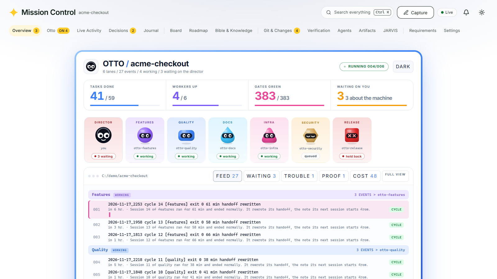

Mission Control
Watch the whole factory on one screen.
A command center for the days-long runs: who is working, how full each context window is, what is stuck, what is proven, and what needs you. Read-only by default. Every write is a gated action with a diff.
Say hi to CECILIA.
Cecilia is the factory that runs the sessions. Her live console shows every lane, the supervisor's view, the locks and the problems. This is the whole machine in a terminal.

Every view, in action.
